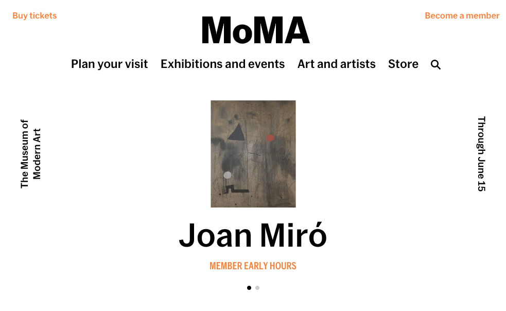
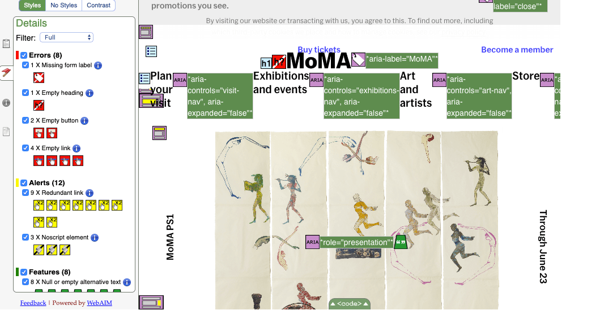
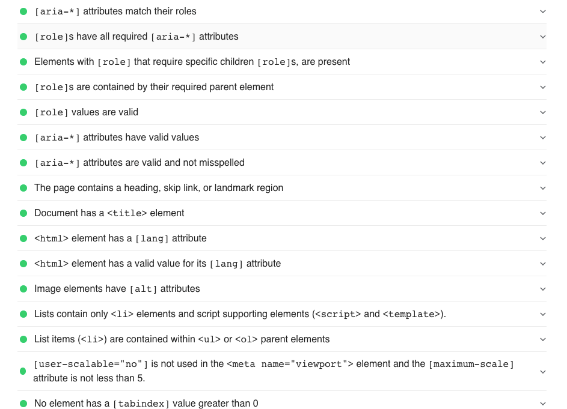
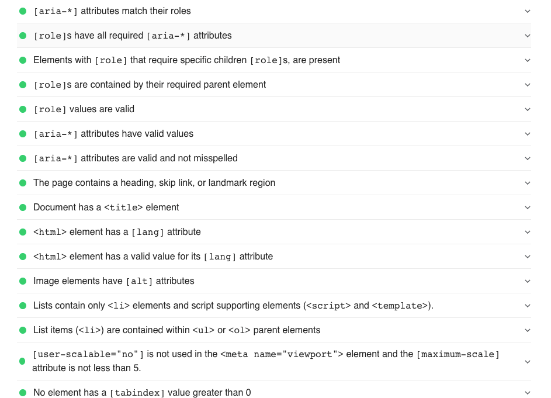

For this week accessibility report, I reviewed the website for the Museum of Modern Art located in New York City. Using this checklist by Webaim and WCAG 2.0 standards, the website's overall accessibility does well but as you will see in the report below, there are a few changes that can be added to achieve the highest score.
MoMA website serves a source of information for people who are looking to become members, people who want to find out about the museum activities, tickets sales, artists who wish to showcase their art, a store that has interesting items, and many more. The website is for everyone to use and if you plan on visiting New York City, I recommend you visit this museum.
 MoMA.org HomepageI used Google's lightweight, VoiceOver by Apple, WAVE and WCAG 2.0 standards for conformance evaluation.
 WAVE summary pageThe overall findings using WAVE and Google lighthouse, there were errors: missing label, empty button, empty heading, and empty links. When it comes to contrasts colors and text, the website scores with high ratings with a contrast ratio of 8.59, for standard text and large text the score a conformance level AA and AAA.
 Google lighthouse audit

Lighthouse detailed summary
Google lighthouse audit

Lighthouse detailed summary
The majority of errors seem to be non-essential, but a for good practice, it would best to address them. For example, some links and images are missing descriptions. I think this also has to do with the overall design of the website and none of the errors listed above affected. Using VoiceOver screen by Apple to test keyboard input, I did not run into any issues at all. It also my first time using this tool, but, I was able to navigate the website and get all the information I needed.
For recommendations, removing the empty header, fixing the labels, and links would make the website fully accessible. The site is a well-designed, and it meets most accessibility principles. Achieving 100% accessibility is what every developer should strive for, but in this case, making additional changes to accommodate full accessibility could also potentially alter with the site overall design.